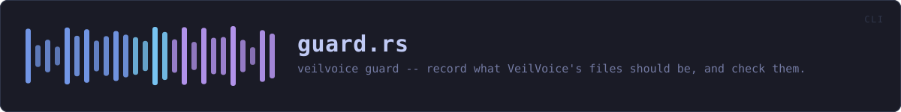

crates/veilvoice-cli/src/guard.rs
veilvoice-cli · 338 lines · read the source
veilvoice guard -- record what VeilVoice's files should be, and check them.
Detection, not prevention. See [veilvoice_guard::SCOPE], which every path through this module prints, for the same reason the app lock prints its own: a protection someone over-trusts has made them less safe, not more.
What the three steps actually do
initwalks the files that make up this installation and records a SHA-256 for each. Optionally sealed with a passphrase, so the record itself cannot be quietly rewritten to match tampered files.checkre-walks and reports what is modified, removed and added. All three matter: an added file in the installation directory is as interesting as a changed one.blametries to say which process made a change, and says plainly when it cannot.
Why attribution usually fails, and why that is reported rather than hidden
Attribution needs the operating system to have been recording. On Linux that means an auditd watch; on Windows a SACL on the path plus the audit policy enabled, and reading it needs elevation. Neither is on by default on a normal machine.
So the common answer is "something changed this file and I cannot tell you what", and this module prints exactly that rather than an empty list. An empty list reads as nothing happened, which is the opposite of the truth, and is the same mistake as a monitor reporting an empty machine because a registry query silently matched nothing.
The bound, again
A manifest running as the user protects nothing from that user, and detects rather than prevents even when it works. Anything that can write these files can write the manifest beside them. That is why the passphrase-sealed record exists, why [veilvoice_guard::SCOPE] is printed on every path through this module, and why the word "tamper-proof" appears nowhere in it.
WHAT CALLS WHAT
The functions this file defines, and the calls between them. An edge means the callee's name appears, called, inside the caller's body — a syntactic reading, not a type-resolved one.
The same graph as Mermaid source
%%{init: {"theme":"base","themeVariables":{"background":"#1a1b26","primaryColor":"#1f2335","primaryTextColor":"#c0caf5","primaryBorderColor":"#7aa2f7","secondaryColor":"#16161e","tertiaryColor":"#16161e","lineColor":"#737aa2","textColor":"#c0caf5","mainBkg":"#1f2335","nodeBorder":"#7aa2f7","clusterBkg":"#16161e","clusterBorder":"#2f3549","fontFamily":"ui-monospace, SFMono-Regular, Consolas, monospace","fontSize":"14px"}}}%%
flowchart TD
n_manifest_path["manifest_path<br/>line 67"]
n_sealed_path["sealed_path<br/>line 80"]
n_print_scope["print_scope<br/>line 84"]
n_default_targets["default_targets<br/>line 93"]
n_run(["run<br/>line 106"])
n_init["init<br/>line 118"]
n_load["load<br/>line 181"]
n_check["check<br/>line 194"]
n_status["status<br/>line 263"]
n_check --> n_load
n_check --> n_print_scope
n_check --> n_sealed_path
n_init --> n_default_targets
n_init --> n_print_scope
n_init --> n_sealed_path
n_load --> n_sealed_path
n_run --> n_check
n_run --> n_init
n_run --> n_manifest_path
n_run --> n_status
n_status --> n_print_scope
n_status --> n_sealed_path
classDef entry fill:#1f2335,stroke:#7aa2f7,color:#c0caf5
class n_run entry
classDef helper fill:#1f2335,stroke:#bb9af7,color:#c0caf5
class n_manifest_path,n_sealed_path,n_print_scope,n_default_targets,n_init,n_load,n_check,n_status helperThis site loads no third-party script, so it cannot run Mermaid; the diagram above is the same nodes and edges drawn by the generator instead. GitHub renders the source below directly.
ITEMS
| Item | Line | Documentation |
|---|---|---|
Action pub enum | 46 | |
manifest_path fn | 67 | Where the manifest lives, beside the app lock. |
sealed_path fn | 80 | A sealed manifest sits beside the plain one, with a different suffix. |
print_scope fn | 84 | |
default_targets fn | 93 | The files worth watching when the user names none: the running binary, and the app lock beside it. |
run pub fn | 106 | |
init fn | 118 | |
load fn | 181 | Load whichever form of the record exists, asking for a passphrase only if the sealed one is the one that is there. |
check fn | 194 | |
status fn | 263 |